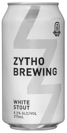

Zytho White Stout
Tribe Breweries
Goulburn, New South Wales
375mL can
5.2% Alc/Vol
White stout is for the seeker of new tastes. This is a light coloured beer, creamy in texture with all the smoky, chocolate, coffee & vanilla complexity you would expect from a classic dark winter stout.
Long before there were beer geeks, there were zythophiles. Related to the Greek verb zeo, meaning “to boil”, a zythophile is a lover of all things beer. A full-flavoured yet crisp and highly sessionable example of Australians' favourite craft beer style.
Is Zytho a real brewery? It doesn't seem like it. It's brewed by Tribe Breweries in Goulburn, though Tribe don't mention it on their website. Clearly I was seduced by the concept of the white stout without doing my research.